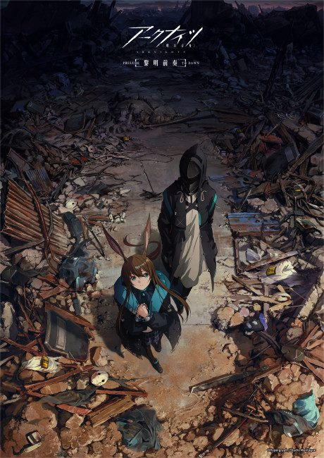

AnimeArknights: PRELUDE TO DAWN
アークナイツ 黎明前奏
An original anime, so there's no book to continue with.
7.0AniList
—Animeter
26 ep3 seasons
3 seasons, 26 episodes
In airing order. Episode numbers on this site count straight through every season, so season 2 starts at episode 9.
1
2022 · TV
Arknights: PRELUDE TO DAWN
Episodes1–88 ep
2
2023 · TV
Arknights: PERISH IN FROST
Episodes9–168 ep
3
2025 · TV
Arknights: RISE FROM EMBER
Episodes17–2610 ep
Sources: AniList